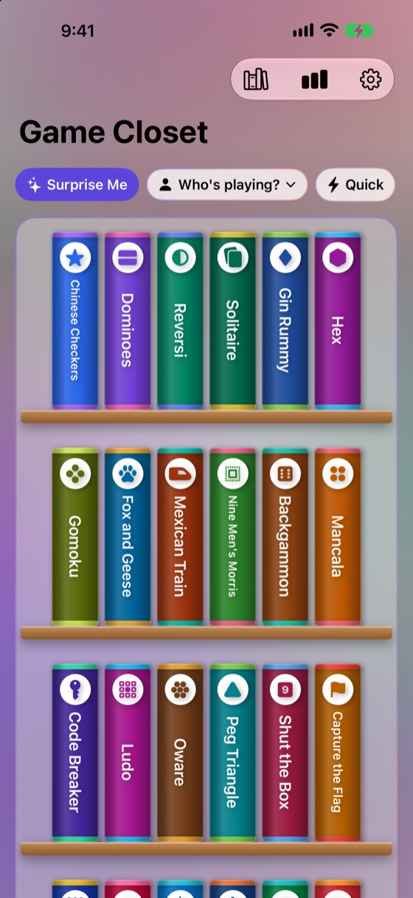
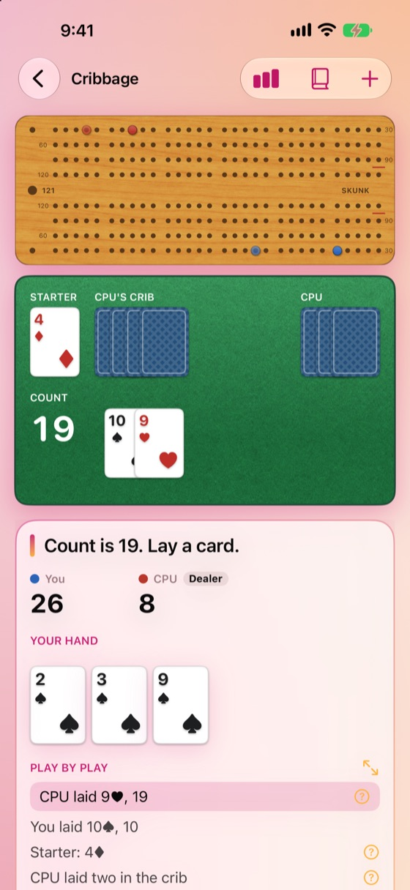
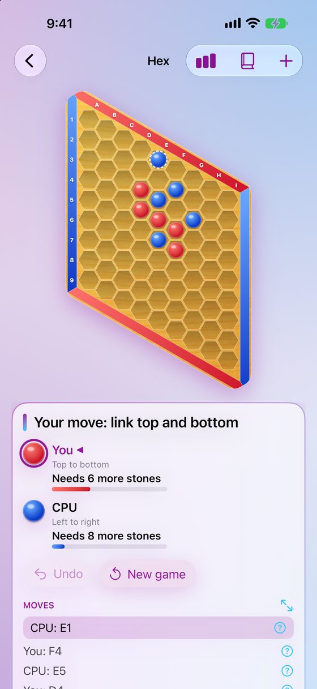
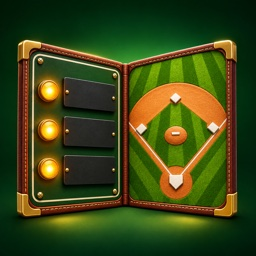
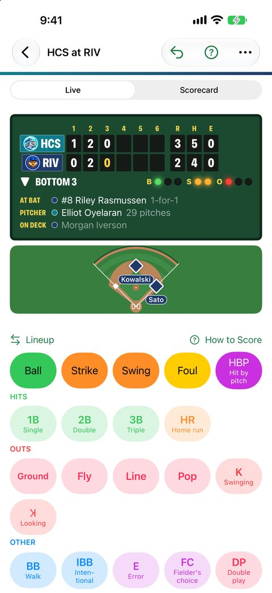
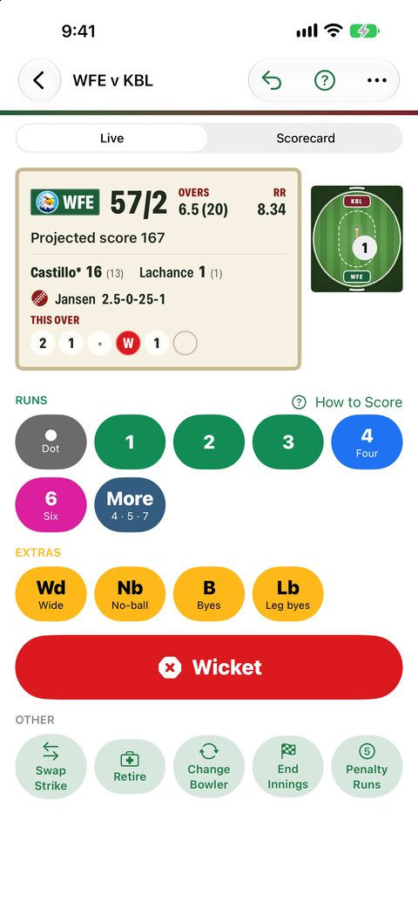
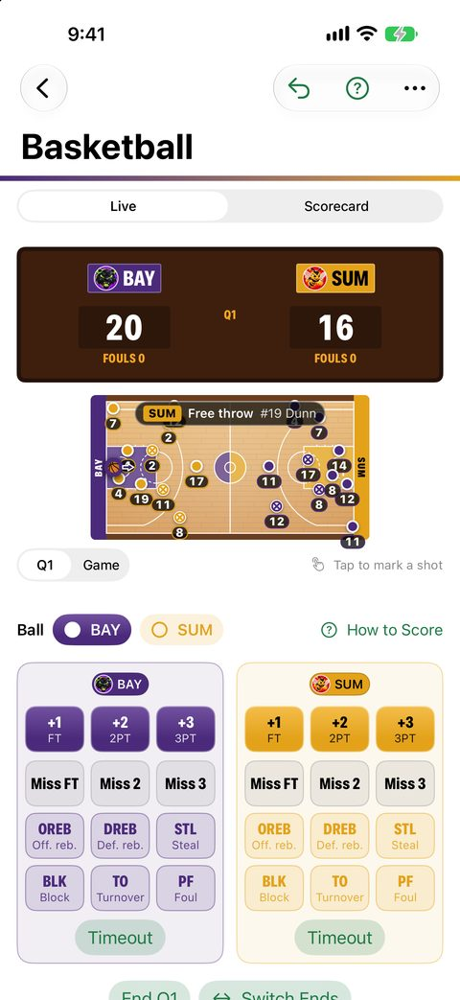
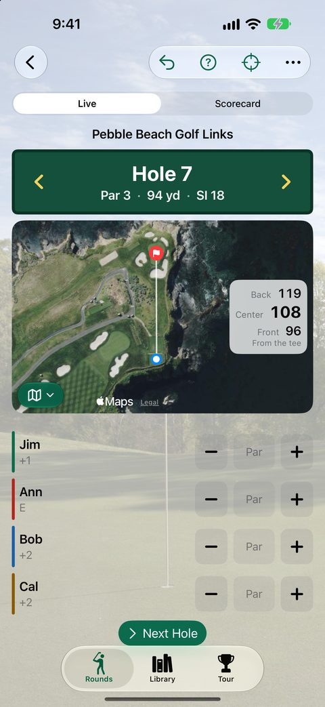
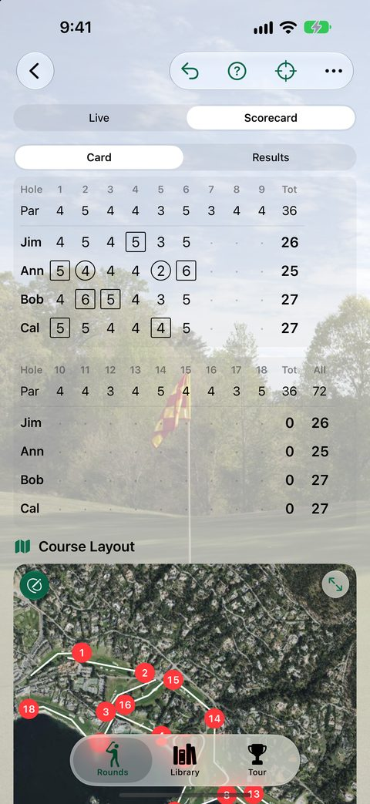
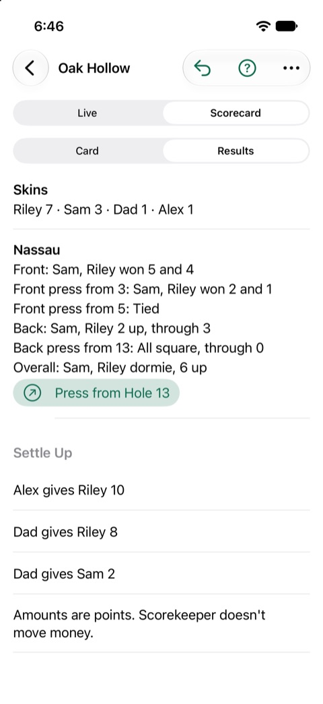

DeeDogDevelopment
Small, friendly apps from Jim Murff.
Small, friendly apps from Jim Murff.
Keep Grandma’s recipe alongside your own version. Then pick the dishes and when you want to eat. Fork&Oven works backward to schedule the meal.
For iPhone and iPad, with an Apple Watch companion.
Updated · Mac update in review · What's new
The hall closet of old games, opened on your phone: forty-four board, dice and card classics, each with its rules written out and a CPU opponent who plays a fair game. Pass the phone around, or play a friend head to head on two devices in the same room.
Free, with no ads and no account. For iPhone, iPhone Duo, iPad and Mac.




Version 1.3.0 · Available nowUpdated · What's new
A scorebook without the eraser: baseball and softball pitch by pitch, cricket ball by ball, basketball, football, soccer, hockey and rugby play by play, and volleyball, pickleball and tennis point by point, with a box score for every player and pitch-count warnings for youth baseball.
Scoring is free, with no limit on games. Scorekeeper Pro, a one-time purchase, adds iCloud sync, Share Live, hosting a game to score together on two phones, and more, and Scorekeeper Live adds following pro games play by play. For iPhone, iPhone Duo, iPad, Apple Watch and Mac.



Updated · What's new
A golf scorecard with yards to the green, every hole on the map, and skins, Nassau and wolf settled at the end. For iPhone, iPhone Duo and iPad.



A few more apps are in the works. Some of them may ship.
Weather that tells you how today differs from yesterday, instead of a forecast. With widgets and a watch complication. For iPhone and Apple Watch.
A lifetime head-to-head record for anything you play with the same people: ratings, a title belt that changes hands, and a rivalry card to share. Games scored in Scorekeeper come in on their own. For iPhone and Apple Watch.